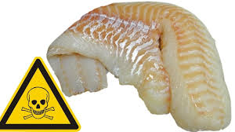

Barrett's Latest Rants & Observations
Gulf of AmericaA Fact Check Worth Reading
Since I proudly live on the Gulf of America, it was interesting to observe the kerfuffle in the media. Over a year later it still pops up — and most people are still missing the real story. Let me fix that.
Read This Post →
Warning: Something's FishyWhy You Should Avoid Swai
That fish on the menu labeled "White Fish"? It might be Swai — farmed in the Mekong Delta, one of the world's most polluted rivers. I've been sounding this alarm for decades. It's time you knew.
Read This Post →
The Hardest Worker on the ReefA parrotfish, a sideways warship, and an award I didn't see coming
I dove the USS Spiegel Grove just one year after she was sunk — lying on her starboard side, disorienting and massive. A parrotfish didn't care at all. Neither did the SEALIFE Camera judges. Most humorous photo of the event. I'm still smiling 22 years later.
Read This Post →